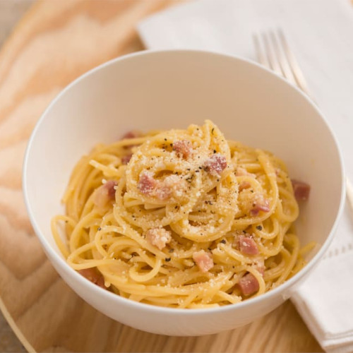

Spaghetti Carbonara Recipe

About Spaghetti Carbonara
This recipe of Spaghetti Carbonara is originally from the Cooking With Dog YouTube channel. It's probably not the same quantities as in the video, as I do it from memory and to my family's liking.
Ingredients:
- Around 500 grams of spaghetti
- 3 eggs
- 500 ml. of milk
- 4 tablespoons of parmesan cheese
- Pepper
- Garlic cloves
- Olive oil
- 250 grams of bacon, cut into small pieces
- White wine
- Parsley for decoration (optional)
Instructions:
- Cook the spaghetti with water until it's al dente. You can add salt if you want but not too much, as the parmesan cheese is salty. Then reserve.
- While the pasta cooks, make the carbonara sauce. Mix the eggs with the milk, the parmesan cheese and the pepper. Reserve.
- Crush a clove of garlic. Then in a pan with olive oil, cook the crushed garlic until aromatic.
- Add a portion of the bacon (just enough for one serving). Then add a splash of white wine when the bacon is cooked.
- After a while, add a portion of the spaghetti for one serving to combine with the bacon.
- Once done cooking the pasta, remove from the heat and add the carbonara sauce. How much you add is up to you. If you feel the sauce is not cooked to your liking, put the pasta back on your flame.
- Serve on a plate, add above your serving more parmesan cheese and pepper, as much as you see fit. Finally, add a leaf of parsley for fanciness. Enjoy!
Additional notes:
- As I said before, this recipe is from a Japanese channel, so the recipe is more like the Japanese variant than the original Italian one.
- I always forget to buy olive oil, so I use regular oil instead. There's almos no difference flavor wise.
- This recipe serves around four or five servings. Enough for a family of five or a family of three who likes seconds (like mine lol).
Go back to see more recipes.